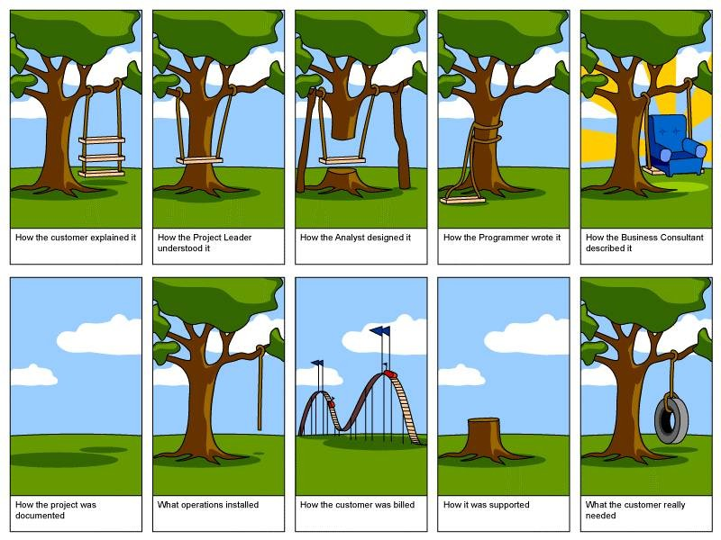
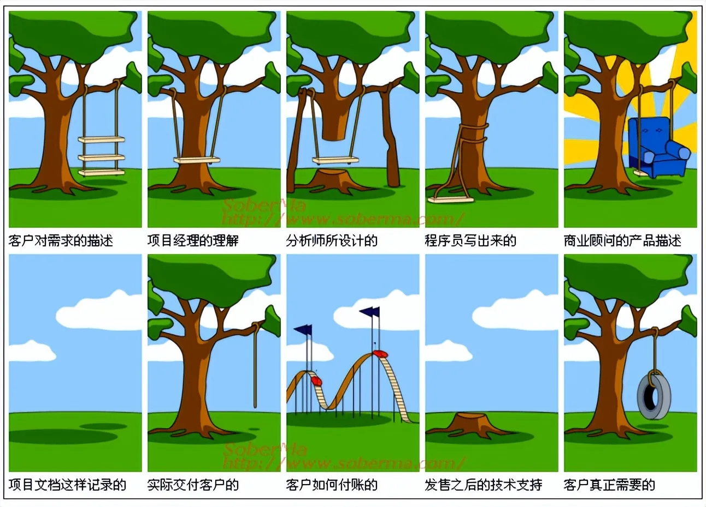
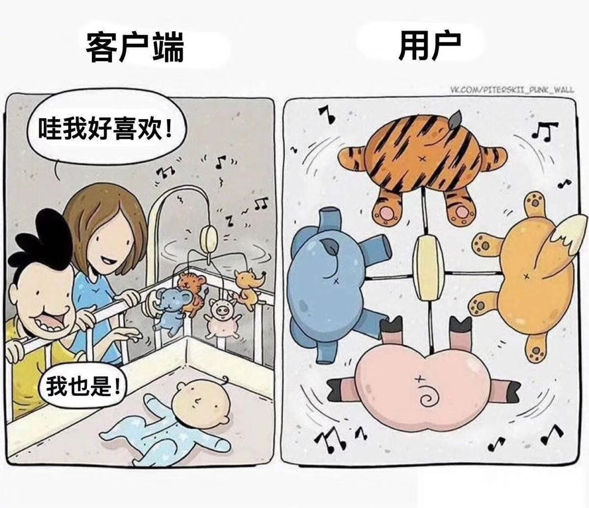
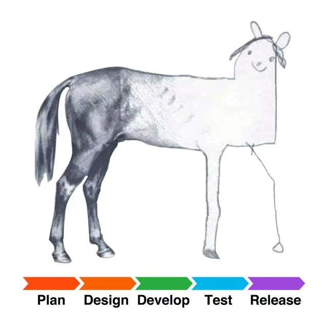
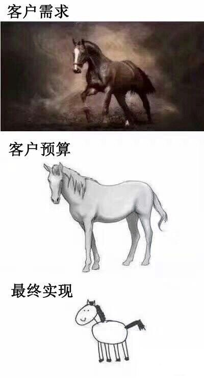
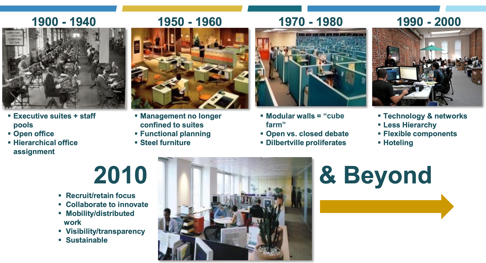

需求
要充分理解需求，才能真正做出用户想要的东西
软件开发过程中，最常出现的，也是最严重的问题，也是非常重要一个环节就是：需求
即搞清楚客户想要什么，然后多快好省的实现对应功能。
而如果需求理解不充分，则会出现这种情况：
你以为你实现的客户端是很好的，但是用户眼中看到的却是别样感受
即，你以为你理解了客户的需求，其实各自想要的以为东西不一样，有时候还有很大的偏差
以及公司内部不同部门和职位的人员之间的沟通，都会有理解的差异
加上具体技术实现和产品原型本身存在差异，就会导致这种不同的理解
网上有很多相关的经典的例子：
- 不同阶段，对于需求的理解，都不同：简易秋千
- 单图
- 英文
- 
- 中文
- 
- 英文
- 多图
- 客户是这样描述需求的
- 项目经理是这样理解的
- 设计出来是这样的
- 开发出来的是这样的
- 测试的时候是这样的
- 顾问是这样形容的
- 实施是这样的
- 顾客得到的是这个样子的
- 顾客真正想要的是这个样子的
- 客户是这样描述需求的
- 单图
- 你眼中的儿童的有趣的动物玩具，但儿童眼中其实是一堆动物屁股
- 
- 不同阶段的小龙女的效果
- 不同阶段对马的需求的理解的差异
- 
-》软件开发中的沟通很重要
-》如果需求都不对，后续代码实现，更不可能对，所谓上梁不正下梁歪的感觉。
希望实现需求理解充分和一致
-》而我们最希望达到的效果是这种：
- 不同阶段对需求的理解都很一致
开发时间不足，导致结果很差
如果时间被压缩的到不合理程度，会导致结果很差：
- 需求和实现差异很大：一座桥
预算不足，导致结果很差
当然也有预算原因导致的：
- 需求和实现差异很大：马
- 
其他相关
确保用户使用方式正确
以及，即使你把东西（软件）做出来，但是你的用户（可能）永远不会按照你的想法使用产品的，而是有自己的想法=特殊的使用方式：
- 特殊的使用方式：猫吃猫粮
系统非常稳定，所有代码不要随便乱动
工作地点的变化
